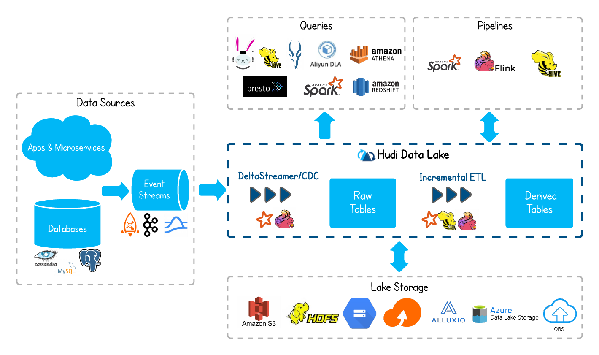

Warehouse vs DataLake vs Lakehouse

本文主要介绍数据湖 (DataLake)、数据仓库 (Data Warehouse) 以及湖仓一体架构（Lakehouse）相关概念和知识，作为进一步学习和研究相关技术的前置知识。
1、Data Warehouse
数据仓库，在“数据仓库之父” W.H.Inmon 《Building the Data Warehouse》一书中对数据仓库的定义是：“一个面向主题的、集成的、非易失的、随时间变化的、用来支持管理人员决策的数据集合”。
扩展：Inmon vs Kimball methodology
- 面向主题： 业务数据库中的数据主要针对事务处理，各个业务系统之间是相互分离的，而数据仓库中的数据是按照主题进行分组的。
- 集成：数据仓库中存储的数据是从业务数据库中提取出来的，但并不是对原有数据的简单复制，而是经过了抽取、清理、转换（ETL）等工作。业务数据库记录的是每一项业务处理的流水账。这些数据不适合进行分析处理，进入数据仓库之前需要经过一系列计算，同时抛弃一些无关分析处理的数据。
- 非易失：业务数据库中一般只存储短期数据，因此其数据是不稳定的，记录的是系统中数据变化的瞬态。数据仓库中的数据大多表示过去某一时刻的数据，主要用于查询、分析，不像业务系统中的数据库一样经常修改，一般数据仓库构建完成后主要用于访问，不进行修改和删除。
- 随时间变化：数据仓库关注的是历史数据，按时间顺序定期从业务库和日志库里面载入新的数据进行追加，带有时间属性。
数据抽取到数据仓库的流程示例图如下：
在数据仓库建模过程中，主要涉及事实表（Fact table）和维度表（Dim table）的建模开发：
事实表主要围绕业务过程设计，就应用场景来看主要包括事务事实表、周期快照事实表和累计快照事实表：
- 事务事实表：用于描述业务过程，按业务过程的单一性或多业务过程可进一步分为单事务事实表和多事务事实表。其中单事务事实表分别记录每个业务过程，如下单业务记入下单事实表，支付业务记入支付事实表。多事务事实表在同一表中包含了不同业务过程，如下单、支付、签收等业务过程记录在一张表中，通过新增字段来判断属于哪一个业务过程。当不同业务过程有着相似性时可考虑将多业务过程放到多事务事实表中。
- 周期快照事实表：在一个确定的时间间隔内对业务状态进行度量。例如查看一个用户近 1 年付款金额、近 1 年购物次数、近 30 日登录天数等。
- 累计快照事实表：用于查看不同事件之间的时间间隔，例如分析用户从购买到支付的时长、从下单到订单完成的时长等。一般适用于有明确时间周期的业务过程。
维度表主要用于对事实属性的各个方面描述，例如，商品维度包括商品的价格、折扣、品牌、原厂家、型号等方面信息。维度表开发的过程中，经常会遇到维度缓慢变化的情况，对于缓慢变化维一般会采用：1、重写维度值，对历史数据进行覆盖；2、保留多条记录，通过插入维度列字段加以区分；3、开发日期分区表，每日分区记录当日维度的属性；4、开发拉链表按时间变化进行全量存储等方式进行处理。
一个简单的事实表和维度表示例（星型模型）如下：
事实表主要包含维度表属性的度量，如上图中订单事实表的订单交易金额和交易数量；而维度表则主要包含用于计算事实表度量的属性。
Fact Table vs Dimension Table
1、事实表包含属性（attribute）数量远少于维度表；
2、事实表包含的记录数比维度表多；
3、事实表是“窄表”，而维度表是“宽表”；
4、事实表的属性类型一般包含数字格式和文本格式，而维度表则是文本格式；
5、事实表基于维度表建立，需要先选择维度；
6、在模型中，事实表的数量要比维度表少；
7、事实表主要用于分析和决策支持；维度表则负责存储业务过程的信息；
数仓方法论
三范式(3NF)[1]:
- 第一范式(1NF): 无重复列。也叫属性不可分，像学生信息里的电话号码，不能在一个列内存放一个学生的所有电话号码信息，需拆分成多行；
- 第二范式(2NF): 非主属性部分依赖于主键。学生信息表中所有属性都依赖于学生 id；
- 第三范式(3NF): 非主属性不存在传递依赖。学生信息表只能有学院id(这个是其他主属性)，通过这个学院id可以和学院的信息表关联，而不能把每个人的学院信息都全加上。
OLTP 系统数据主要使用的建模方式便是三范式，从而在事务处理中解决数据的冗余和一致性问题。
ER 模型 (Inmon model)
Inmon，也被称为数仓之父，他提出的建模方法是从企业的高度设计一个 3NF 模型，但数仓的 3NF 与 OLTP 中的 3NF 的区别在于，它是站在企业的角度面向主题的抽象，而不是针对具体业务过程。
Inmon 方法采用自上而下（top-down approach）的建模方式，是从数据源到数据仓库再到数据集市的一种瀑布流开发方法。Inmon 模型以数据源头为导向，首先，需要探索性地去获取尽量符合预期的数据，尝试将数据按照预期划分为不同的表需求。其次，明确数据的清晰规则后将各个任务通过 ETL 由 Stage 层转化到 DW 层，这里 DW 层通常涉及到较多的 UDF 开发，将数据抽象为实体-关系（ER）模型。接着，在完成 DW 的数据治理之后，可以将数据输出到数据集市中做基本的数据组合。最后，将数据集市的数据输出到 BI 系统中去辅助具体业务。
数据仓库与数据集市 - data warehouse vs data mart[2]
数据集市定义
数据集市是一组特定的、针对某个主题域、某个部分或者某些特殊用户而进行分类的数据集合，也可以说是小型的数据仓库。
两者区别
数据仓库是企业级的，能为整个企业各个部门的运行提供决策支持手段；而数据集市则是一种微型的数据仓库，它通常有更少的数据，更少的主题域，以及更少的历史数据，因此是部门级的，一般只能为某个局部范围内的管理人员服务，因此也称为部门级数据仓库。
建模涉及的主要步骤：
1 | 1、高层模型(DW data model)：一个高度抽象的模型，描述主要的主题以及主题间的关系，用于描述企业的业务总体概况； |
特点：
1 | - 数仓非常灵活，能够适应变化； |
维度模型 (Kimball model)
Kimball 模型，也称为维度模型（Dimensional model）, 由 Ralph Kimball 提出，是一种采用自底向上的建模方式，即从数据集市到数据仓库再到数据源（先有数据集市再有数据仓库）。Kimball 模型都是以最终任务为导向的。首先，在得到数据后需要先做数据的探索，尝试将数据按照目标先拆分出不同的表需求。其次，在明确数据依赖后将各个任务再通过 ETL 由 Stage 层转化到 DM 层。这里 DM 层数据由若干个事实表和维度表组成。接着，在完成 DM 层的事实表维度表拆分后，数据集市一方面可以直接向 BI 环节输出数据，另一方面可以向 DW 层输出数据，方便后续的多维分析。
Kimbal 模型的典型代表是星型模型（star model）[3]与雪花模型（snowflake model）[4]。
星型模型和雪花模型都是多维数据模型，雪花模型可以看作是星型模型的扩展形式。可以参考Difference between-star-schema-and-snowflake-schema 了解两者间的差异。
建模主要步骤[5]：
1 | 1、选择业务过程，业务过程可能是交易的支付、下单等，也可能是当前用户余额等； |
特点：
1 | - 构建速度快 |
Inmon vs Kimball
| 对比项 | Kimball | Inmon |
|---|---|---|
| 方式 | 自底向上实现 | 自顶向下实现 |
| 数据集成 | 专注于独立的业务域 | 站在企业角度上考虑业务域 |
| 构建时间 | 高效，所需时间少 | 复杂，花费大量时间 |
| 开销 | 迭代式，成本效益高 | 初始化开销大，开发开销小 |
| 技能需求 | 不需要专家团队，由通用团队可完成 | 需要专家才能搭建 |
| 可维护性 | 困难 | 简单 |
| 数据模型 | 数据存储于非正则化(denormalized)模型 | 数据存储于正则化(normalized)模型 |
| 数据存储系统 | 源数据系统高度稳定 | 源数据系统频繁变化 |
Inmon 模型从数据本身出发构造模型，对数据规范的要求更高，设计性更好，在多变的互联网里较难出结果，而 Kimball 模型从业务需求出发设计模型，更加适合互联网数仓。
数仓建模
在数仓建模中，优秀的分层设计能够让整个数据体系更易理解和使用。分层的意义：
1、理清业务数据：随着数据量和业务数据表的不断扩张，需要我们理清数据作用域，可以清晰地找到数据来源；
2、避免重复计算：为了避免多次计算，多次关联多张表，分层可以保存中间结果，减小开发成本；
3、增加数据使用便捷性：仓库层的设计，让数据能分析，好分析，能支持大部分数据需求；
4、避免数据分歧：统一数据口径，保证数据质量，避免出现统一指标多种概念。
比较通用的简单的维度建模分层，分为三层：

一、ODS 层，数据操作层
ODS (operation data store)，把操作系统的数据几乎无处理地存放在数仓中，主要有以下工作：
- 将业务结构化数据增量或全量的同步进来；
- 将日志等非结构化的数据结构化处理后落地到数仓中；
- 累计历史数据，根据数据业务需求、审计等要求保存历史数据、清洗数据，保留的数据快照也便于回溯。
二、CDM 层，公共维度模型层
存放明细事实数据、维度数据及公共指标汇总数据，统一口径，保持数据一致性，减少数据重复计算，CDM(common dimensional model) 层分为 DWD(Data Warehouse Detail) 和 DWS(Data Warehouse Summary) 层。
1、DWD 层，明细数据层
DWD 层对业务数据进行清洗、规范化，例如去除作弊数据，对数据字段进行规范命名从而避免歧义化等，另外可采用维度退化手段，将维度退化至事实表中，减少事实表和维度表的关联，提高明细表的易用性。
2、DWS 层，汇总数据层
DWS 层，加强指标的维度退化，采用更多的宽表化的手段构建公共指标数据层，提升公共指标的复用性，减少重复加工。
三、ADS 层，应用数据层
ADS (Application Data Service) 层存放数据进行个性化的指标计算，具备不共用性、复杂性（指数型、比值型、排名型）等特性，会基于应用数据组装，想大宽表集市、横标转纵表、趋势指标串等，另外由于 ADS 某些指标具有个性化的特点，尽量不对外提供服务。
维度建模分层示例
1、ODS 层会将各种日志数据及业务库中数据或者其他数据进行落地；
2、DWD 层，如用户登录表，会做以下一些操作
- 去除爬虫等出现异常数据，保持数据质量；
- 规范统一数据字段；
- 拆解需要拆解的字段；
- 融合各端数据；
3、DWS 层，如用户主题表，会做以下一些操作：
- 统计操作轨迹用户数数据；
- 统计用户购买商品数，登录次数，订单数，退货数等；
- 增加用户维度，时间维度；
4、ADS 层，如用户转化漏斗，可以利用 DWS 层数据进行维度分析，分析漏斗，为产品做决策支持；
建模基本原则
1、高内聚低耦合
主要从数据业务特性和访问特性两个角度考虑：
将业务相近或者相关、粒度相同的数据设计为一个逻辑或者物理模型；
将高概率同时访问的数据放在一起，将低概率同时访问的数据分开存储；
2、核心模型与扩展模型分离
核心模型包括的字段支持常用的核心业务，扩展模型包括的字段支持个性化或少量应用的需要，不要让扩展模型包括的字段过多地入侵核心模型，破坏核心模型的性能和简洁等。
3、存储成本与计算性能均衡
在很多时候，设计可能清晰，但存储成本很高，或存储成本很低但计算逻辑复杂，性能差，为此，建模时需要在存储成本和计算性能之间进行均衡。
4、公共逻辑下沉及统一
避免重复计算，需将公共逻辑在底层实现并统一口径。
5、幂等性
处理逻辑不变，多次执行的结果需保持一致。
6、规范性
相同含义字段需在多表中命名一致，表命名需清晰规范，便于查询及使用。
数仓规范
规范是数仓实施过程中最重要的要素之一，建模规范化可以尽可能避免一些问题。
数仓规范主要包含模型分层、表命名规范、字段规范、外部表规范和口径规范，其中模型分层见上文数仓建模。
一、表命名规范
ODS 层：数据接入层
日志类非结构化表：ods_[数据域]_[自定义内容]_[刷新频率]
业务库结构化同步表：ods_[数据域]_[业务库名]_[表名]_[刷新频率]
DWD 层：明细数据层
dwd_[数据域]_[自定义内容]_[粒度]_[刷新频率]
DWS 层：数据汇总层
dws_[数据域]_[自定义内容]_[粒度]_[刷新频率]
ADS 层：数据应用层
ads_[数据域]_[自定义内容]_[粒度]_[刷新频率]
| 组合标记 | 标记含义 |
|---|---|
| ma | 按月分区全量更新 |
| mi | 按月分区增量更新 |
| da | 按天分区全量更新 |
| di | 按天分区增量更新 |
| ha | 按小时分区全量更新 |
| hi | 按小时分区增量更新 |
二、字段命名规范
1、命名
- 小写
- 下划线分割
- 数量字段后缀加
_cnt等标识 - 金额字段后缀加
_price等标识 - 禁止使用 SQL 关键字
2、字段格式
- 浮点数使用
decimal(28,6)控制精度等
3、NULL 字段处理
- 对于维度字段，需设置为 -1
- 对于指标字段，需设置为 0
三、外部表及口径规范
使用 Hive 外部表，避免误操作行为；采用合适的数据文件格式和压缩方式，e.g. orc, parquet 等，gz, snappy 等压缩方式；
口径规范：保证主题域内指标口径一致，无歧义。
2、DataLake
什么是数据湖？
尽管数据湖是近期比较热门的一个概念，但它其实并不是什么新兴概念，据 wikipedia，早在 2011 年便有了该术语，它目前是拥有许多不同的定义。
A datalake is a system or repository of data stored in its natrual/raw format, usually object blobs or files. A data lake is usually a single store of data including raw copies of source system data, sensor data, social data etc, and transformed data used for tasks such as reporting, visualization, advanced analytics and machine learning. A data lake can include structured data from relational databases (rows and columns), semi-structured data (CSV, logs, XML, JSON), unstructured data (emails, documents, PDFs) and binary data (images, audio, video). A data lake can be established “on premises” (within an organization’s data centers) or “in the cloud” (using cloud services from vendors such as Amazon, Microsoft, or Google).[6]
wikipedia 定义：数据湖是一类存储数据自然/原始格式的系统或存储，通常是存储对象块或文件，包括原始系统所产生的原始数据拷贝以及为了各类任务而产生的转换数据，包括来自关系型数据库中的结构化数据（行和列）、半结构化数据（如CSV、日志、XML、JSON)、非结构化数据（如email、文档、PDF等）和二进制数据（如图像、音频、视频等）。数据湖可以建立在组织内或云上的存储。缺乏管理的数据湖一般被称为为数据沼泽（data swamps）。
AWS 定义数据湖是一个集中式存储库，允许你以任意规模存储所有结构化、半结构化和非结构化数据。
关于数据湖的定义有很多，但基本围绕以下几个特性展开：
- 数据湖需要提供足够用的数据存储能力，能够保存一个企业/组织中的所有数据；
- 数据湖可以存储海量的任意类型的数据，包括结构化、半结构化和非结构化数据；
- 数据湖中的数据是原始数据，是业务数据的完整副本。数据湖中的数据保持了他们在业务系统中原来的样子；
- 数据湖需要具备完善的数据管理能力（元数据管理），可以管理各类数据相关的要素，包括数据源、数据格式、连接信息、数据schema、权限管理等；
- 数据需要具备多样化的分析能力，包括但不限于批处理、流式计算、交互式分析及机器学习；同时，还需要提供一定的任务调度和管理能力；
- 数据湖具备完善的数据生命周期管理能力。不光需要存储原始数据，还需要能够保存各类分析处理的中间结果，并完整地记录数据分析处理过程，能帮助用户完整详细追溯任意一条数据的产生过程；
- 数据湖具备完善的数据获取和数据发布能力。数据湖需要能支撑各种各样的数据源，并能从相关的数据源中获取全量/增量数据；然后规范存储。数据湖能将数据分析处理的结果推送到合适的存储引擎中，满足不同的应用访问需求；
- 对大数据的支持，包括超大规模存储以及可扩展的大规模数据处理能力。
需要特别说明的是：
1、可扩展是指规模的可扩展和能力的可扩展。即数据湖不但要能随着数据量的增大，提供足够的存储和计算能力， 还需要根据需求不断提供新的数据处理模式，例如可能一开始业务只需要批处理能力，但随着业务的发展，可能需要交互式的即席分析能力；又随着业务的时效性要求不断提高，可能需要支持实时分析和机器学习等丰富能力。
2、以数据为导向，要求数据湖对用户而言有足够简单易用、帮助用户从复杂的 IT 基础设施运维工作中解脱出来，关注业务、关注模型、关注算法、关注数据。数据湖面向的是数据科学家、分析师。云原生应该是构建数据湖的一种比较理想的构建方式。
数据湖的基本特征
| 特性 | 数据仓库 | 数据湖 |
|---|---|---|
| 数据 | 来自事务系统、运营数据库和业务线应用程序的关系数据 | 来自 IoT 设备、网站、移动应用程序、社交媒体和企业应用程序的非关系和关系数据 |
| Schema | 设计在数据仓库实施之前（写入型Schema） | 写入在分析时（读取型Schema） |
| 性价比 | 更快查询结果会带来较高存储成本 | 更快查询结果只需较低的存储成本 |
| 数据质量 | 可作为重要事实依据的高度监管数据 | 任何可以或无法进行监管的数据（例如原始数据） |
| 用户 | 业务分析师 | 数据科学家、数据开发人员和业务分析师（使用监管数据） |
| 分析 | 批处理报告、BI 和可视化 | 机器学习、预测分析、数据发现和分析 |
从数据和计算两个层面进一步分析数据湖具备的特性，在数据方面：
1、保真性。数据湖中对于业务系统中的数据都会存储一份“一模一样”的完整拷贝。与数据仓库不同的地方在于，数据湖中必须要保存一份原始数据，其数据格式、数据模式、数据内容都不应该被修改。在这方面，数据湖强调对业务数据原原本本的保存。同时，数据湖应该都能存储任意类型/格式的数据。
2、灵活性。在上述对比表中，“写入型schema”与“读取型schema”，主要是将数据 schema 的设计发生在哪个阶段。对于任何数据应用来说，schema 的设计都是必不可少的环节。“写入型schema”表示 schema 设计需要在数据写入前完成，即必须按照既定 schema 来完成相应数据导入，好处是数据与业务的良好适配，但同时也意味着数仓前期构建成本会比较高，特别是当业务模式不够清晰、业务还处于探索阶段时，数仓的灵活性不够。
3、可管理。数据湖应该提供完善的数据管理能力。既然数据要求保真性和灵活性，那么至少数据湖中会存在两类数据：原始数据和处理后的数据。数据湖中的数据会不断的积累、演化。因此，对于数据管理能力的要求自然会很高，至少应该包含这些数据管理能力：数据源、数据连接、数据格式、数据schema（库/表/行/列）。同时，数据湖是单个企业/组织中统一的数据存放场所，因此，还需要具有一定的权限管理能力。
4、可追溯。数据湖是一个组织/企业中全量数据的存储场所，需要对数据的全生命周期进行管理，包括数据的定义、接入、存储、处理、分析、应用的全过程。一个强大的数据湖实现，需要能做到对期间的任意一条数据的接入、存储、处理、消费过程是可追溯的，能够清楚地重现数据完整产生的过程和流动过程。
在计算方面，数据湖对于计算能力的要求非常广泛，完全取决于业务对计算的要求。
5、丰富的计算引擎。从批处理、流式计算、交互式分析到机器学习，各类计算引擎都属于数据湖应该囊括的范畴。一般情况下，数据的加载、转换、处理会使用批处理计算引擎；需要实时计算的部分会采用流式计算引擎。对于一些探索式的分析场景，可能又需要引入交互式分析引擎。随着大数据技术与人工智能技术的结合越来越紧密，各类机器学习和深度学习算法也不断引入，如 Tensorflow/PyTorch 框架已经支持从 HDFS/S3/OSS 上读取样本数据进行训练。因此，对于一个合格的数据湖而言，计算引擎的可扩展/可插拔，应该是属于它的基础能力。
6、多模态的存储引擎。理论上，数据湖本身应该内置多模态的存储引擎，以满足不同的应用对于数据访问的需求（综合考虑响应时间/并发/访问频次/成本等因素）。但在实际使用过程中，数据湖中的数据通常并不会被高频次的访问，而且相关的应用也多在进行探索式的数据应用，为了达到可接受的性价比，数据湖建设通常会选择相对便宜的存储引擎（如S3/OSS/HDFS/OBS），并且在需要时与外置存储引擎协同工作，以满足多样化的应用需求。
数据湖基本架构
数据湖可以认为是新一代大数据基础设施。为了更好地理解数据湖的基本架构，我们可以了解一下数据基础设施架构的演进过程。
1、第一阶段：以 Hadoop 生态系统为代表的离线数据处理基础设施。如下图[9]所示，Hadoop 是以 HDFS 为核心存储；以 YARN 为资源调度，以 MapRedcue(MR) 为基本计算模型的批量数据处理基础设施。围绕这些核心组件，产生了一系列新组件来不断完善整个 Hadoop 生态系统大数据平台的数据处理能力，如面向 SQL 的 HIVE，面向工作流的 OOZIE，面向在线 KV 操作的 Hbase 等。随着人们对数据处理性能的要求越来越高，新的计算模型也被不断提出来，产生了 Spark、Storm 等计算引擎，MR 模型也逐渐演化成 DAG 模型，DAG 模型增加计算模型抽象的并发能力：对每一个计算成进行分解，根据计算过程中的数据 shuffle 操作点对任务进行逻辑切分, 任务被分成一个个 stage，每个 stage 都可以有一个或多个 task，而 task 可以并发执行，从而提升了整个计算过程的并行能力；此外，为减少数据处理过程中的中间结果数据文件写操作，Spark 等计算引擎会尽量使用计算节点的内存来对数据进行缓存，提高了数据处理过程的效率和系统吞吐能力。

2、第二阶段：Lambda 架构，Lambda 架构由 Storm 项目的创建者 Nathan Marz 在 “How to beat the CAP theorem”[10]一文中提出，该架构主要是为了解决批处理模式无法满足实时性要求高的处理场景的问题，如下图所示。
如今的大部分应用需求需要批处理搭配流计算使用才能满足，而对于用户来说，他们并不关心底层计算引擎和模型是什么，不论是批处理还是流计算，用户都希望能通过统一的数据模型来返回处理结果。从上面 Lambda 架构图可以看到，数据流入平台后，不管是走何种计算模式，最终的处理结果都会通过服务器层对应用提供，确保了访问的一致性。
3、第三阶段：Kappa 架构，Kappa 架构由 Jay Kreps 在 “Questioning the Lambda Architecture" [11]一文中提出，如下图所示，旨在解决 Lambda 架构中存在的问题：需要维护两套分布式引擎的不同代码来处理相同的业务以产生同样的结果，同时也增加了研发的复杂性，例如 Nathan Marz 首次提出的 Lambda 架构中，批处理层采用 HDFS，而流处理层则采用 Storm，计算引擎本身存在差异，比较难做到处理统一。Kappa 架构完全基于流计算处理，典型的流计算引擎如 Flink，其扩展性更好，通过加大流计算的并行度、加大流式数据处理的时间窗口，来统一批处理和流处理两种计算模式。
采用 Kafka + Flink， Kappa 架构可以实现容错的、精准一次性语义、高吞吐低延迟的内存化计算，实现流批执行一体化。但Kappa 架构使用 Kafka 存储数据也会带来一些问题，如缺乏数据管理、查询分析支持等。
综上，从传统的 Hadoop 生态系统架构到 Lambda 架构，从 Lambda 架构到 Kappa 架构演进，大数据平台基础架构逐渐囊括了应用所需的各类数据处理能力，大数据平台逐渐演化成一个企业/组织的全量数据处理平台。在当前企业实践中，除了关系型数据库（RDBs）依托于各个独立的业务系统外，其余的数据几乎都被考虑纳入大数据平台来进行统一的处理。然而，目前的大数据平台基础架构，大多将视角锁定在了存储和计算上，而忽略了对于数据的资产化管理，这恰恰是数据湖作为新一代大数据基础设施所重点关注的方向之一。
数据是一类重要资产已经成为了共识，为了更好地利用数据，企业/组织需要对数据资产
- 1）进行长期原样存储；
- 2）进行有效管理和集中治理；
- 3）提供多模式的计算能力满足处理需求；
- 4）面向业务，提供统一的数据视图、数据模型与数据处理结果；
在该背景下，数据湖除具备大数据平台所拥有的各类基础能力外，更强调对于数据的管理、治理和资产化能力。落到具体实现上，数据湖应该拥有一系列数据管理组件，包括：1）数据接入、2）数据搬迁、3）数据治理、4）质量管理；5）资产目录、6）访问控制、7）任务管理、8）任务编排、9）元数据管理等，参考的数据湖系统架构如图所示：

(PS: 根据在后文的对 Lakehouse 定义的描述，此系统架构也可以称为湖仓架构)
3、Lakehouse
Lakehouse（湖仓）这一概念由 Databricks 出的白皮书“Lakehouse: A New Generation of open platforms that unify data warehousing and advanced analytics”[12]所提出，指新一代统一数据仓库和高级分析需求的开放平台。
“A lakehouse is a new, open architecture that combines the best elements of data lakes and data warehouses. Lakehouses are enabled by a new system design: implementing transaction management and data management features similar to those in a data warehouse directly on top of low-cost cloud storage in open formats. ” [12:1]
Lakehouse 是对数据湖及数据仓库两者优点特性的合并而形成的新型开放架构，直接以开放数据格式的低成本存储构建的数据仓库为基础，实现数据管理功能。
据此定义，不难发现上文关于数据湖系统架构功能及特性的描述是符合该湖仓定义的，这是因为数据湖存在不同理解和定义导致的，按wikipedia 定义，把数据湖当作是一个具备存储一个企业/组织海量任意类型数据的集中式存储，强调的是数据湖的存储能力，而缺乏管理的数据湖容易成为数据沼泽（data swamps）。在数据湖之上增加数据资产化管理能力，便可以视作湖仓，见上文对数据湖特征和架构的描述。
Databricks 对 Lakehouse 给出的关键功能定义如下[13]：
- 事务支持（Transaction support）: 在企业级 lakehouse 中，一般地，数据 pipeline 大多以并发的方式进行数据的读写，因此事务支持能够有效地解决并发场景中的数据一致性问题；
- 模式演化和治理（Shcema enforcement and governance）: Lakehouse 需要支持数据模式演化，以适应数据模式的变化，支持数仓模式，如星型/雪花模式。此外，系统需要拥有健壮的数据治理和审计机制，以确保数据完整性；
- BI 支持：Lakehouse 支持在源数据上使用 BI 工具。可以避免数据湖中数据要往数据仓库/集市迁移副本而带来的开销，也降低了数据访问和处理的延迟；
- 存储与计算解耦（Storage is decoupled from compute）：指在实践中，数据存储和计算分别使用不同的集群，且各自可根据需求进行扩展；
- 开放性（Openess）: 使用的存储数据格式应该是开放且标准化的，如 Parquet、ORC、AVRO 等，并对许多工具和引擎提供高效地直接数据访问支持的 API；
- 支持任意数据类型：lakehouse 可用于存储来自 RDBs 的结构化数据、XML，日志，CSV 等半结构化数据以及机器学习常用的图像、视频和音频等非结构化数据；
- 支持多种计算模式：能够支撑数据科学、机器学习、SQL 查询分析，批处理和流式计算等多种模式，满足各种数据应用对数据访问的需求；
- 端到端的流式支持（End-to-end streaming）：实时任务需求在许多企业中很常见，支持端到端流式处理，可以消除额外专门为实时数据应用存在的独立系统；
湖仓开源方案
实现 Lakehouse 的关键思路是在以廉价数据存储（e.g. S3, HDFS 等）构建的数据湖之上实现事务元数据管理层，以实现 ACID 事务管理、版本控制等管理功能。
目前，若想基于开放文件格式构建湖仓，可以使用 Delta Lake、Apache Iceberg 或 Apache Hudi 来实现。其中，
Delta Lake 由 databricks 开源

Apache Hudi 由 Uber 开源
Apache Iceberg 由 Netflix 开源
它们之间在 ACID 事务支持、分区演化、模式演化、时间旅行、计算引擎支持、社区治理和贡献等的对比可以参考以下内容：
- https://www.dremio.com/subsurface/comparison-of-data-lake-table-formats-iceberg-hudi-and-delta-lake
- https://www.youtube.com/watch?v=IglAEbxerWg&ab_channel=Dremio
各开源方案的具体内容请自行前往相应官网进行了解和学习。
至于采用 Iceberg、Hudi 、DeltaLake 构建数据湖仓，在国内外各个公司均有方案实践分享，如：
1、https://hudi.apache.org/blog/2022/07/11/build-open-lakehouse-using-apache-hudi-and-dbt/
2、https://iceberg.apache.org/blogs
3、https://hudi.apache.org/blog
References & more
1、《Building the Data Warehouse. Fourth Edition》—— William H. Inmon (Bill Inmon)
2、https://www.geeksforgeeks.org/difference-between-kimball-and-inmon
3、https://www.geeksforgeeks.org/difference-between-fact-table-and-dimension-table
4、https://www.geeksforgeeks.org/difference-between-star-schema-and-snowflake-schema
5、Buildling the Data lakehouse - Bill inmon → https://www.youtube.com/watch?v=hUj4Nqwz3GQ
6、Bill Inmon - Data Warehousing in 2022, Textual ETL, and More → https://www.youtube.com/watch?v=-ckvw6I9KKw
7、https://developpaper.com/data-warehouse-and-data-mart-ods-dw-dwd-dwm-dws-ads/
8、Lakehouse: A New Generation of open platforms that unify data warehousing and advanced analytics
9、https://databricks.com/blog/2020/01/30/what-is-a-data-lakehouse.html
10、https://databricks.com/blog/2021/08/30/frequently-asked-questions-about-the-data-lakehouse.html
12、https://towardsdatascience.com/the-key-feature-behind-lakehouse-data-architecture-c70f93c6866f
https://www.geeksforgeeks.org/difference-between-data-warehouse-and-data-mart ↩︎
https://www.geeksforgeeks.org/star-schema-in-data-warehouse-modeling ↩︎
https://www.geeksforgeeks.org/snowflake-schema-in-data-warehouse-model ↩︎
https://www.geeksforgeeks.org/difference-between-data-lake-and-data-warehouse ↩︎
https://aws.amazon.com/cn/big-data/datalakes-and-analytics/what-is-a-data-lake/ ↩︎
http://nathanmarz.com/blog/how-to-beat-the-cap-theorem.html ↩︎
https://www.oreilly.com/radar/questioning-the-lambda-architecture/ ↩︎
https://www.cidrdb.org/cidr2021/papers/cidr2021_paper17.pdf ↩︎ ↩︎
https://databricks.com/blog/2020/01/30/what-is-a-data-lakehouse.html ↩︎